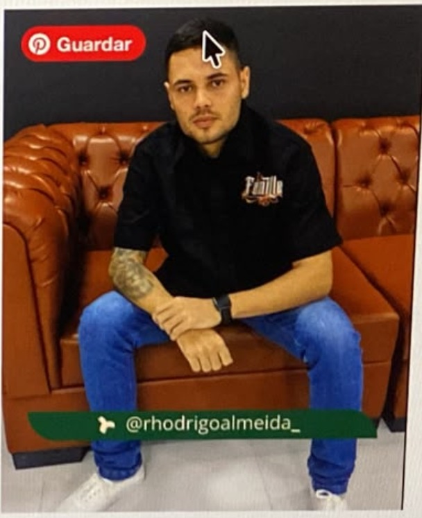
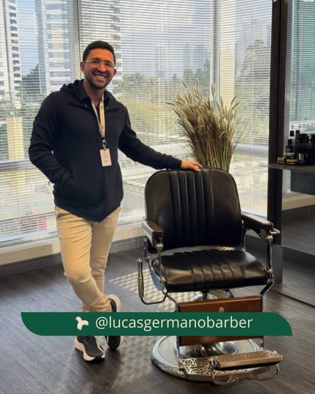

O CurveLine foi pensado para tornar a definição do contorno mais rápida, consistente e precisa, sem limitar a técnica ou a criatividade de quem a utiliza.
Além de um pente tradicional, o conjunto inclui três curvaturas — Classic, Slim e Wide — para diferentes anatomias, linhas e formas de trabalhar.
Classic
Equilibrada e versátil, adapta-se à maioria dos contornos com uma curva natural e consistente.
Slim
Para pescoços mais estreitos, curvas fechadas e contornos angulados, onde encontrar a linha certa exige maior controlo.
Wide
Para pescoços mais largos e contornos abertos, permitindo estabelecer a linha inicial de forma rápida e uniforme.
Na parte traseira, uma curva adicional facilita a ligação entre o centro e as laterais da barba, ajudando a conseguir uma transição mais fluida.
Nem todas as barbas seguem a mesma curva — e não têm de seguir. Reposiciona, adapta ou finaliza à tua maneira.
A CurveLine não substitui a técnica — dá-lhe uma referência precisa quando faz diferença. Mais controlo, rapidez e consistência na bancada. A decisão final continua a ser tua.
Adiciona precisão à tua criatividade.
Vídeo em breve
O CurveLine dá-te a referência. A linha continua a ser tua.
International Barbers + Bird Cut
↗@diogomartins.cuts
↗@andrenunesbarber
↗@fabio.fades
↗@tiagosousa.barber
↗@brunoferreira.cuts
↗@nunoalmeida.fades

@rhodrigoalmeida_

@lucasgermanobarber
↗@miguelcampos.barber
↗@joaoteixeira.cuts
↗@carlossantos.brb
↗@hugomendes.fades
↗@rodrigo.cuts.pt
↗@miguelacuts
↗@joaom.barber
↗@pedroantunes.brb
↗@ruicardoso.fades
↗@nunovieira.brb
↗@andrecosta.cuts
↗@luisferreira.barber
↗@marcosilva.fades
↗@joseramos.cuts
↗@diogomartins.cuts
↗@andrenunesbarber
↗@fabio.fades
Experiências dos Criadores.
“Achei a ideia excelente. Ajuda tanto quem está a começar como quem já tem experiência. Há clientes em que o contorno dá mais trabalho e acabamos por perder tempo até chegar ao resultado certo. Gostei da proposta. Ansioso para que chegue ao Brasil.”
– Renato Guerra 🇧🇷
★★★★★
“Gosto. Achei a proposta muito interessante e até engraçada. É um pente diferente, mas criado para resolver um problema real. Apesar de já ter 10 anos de experiência, esta parte curva da barba sempre me deixava um pouco tenso e, por vezes, obrigava-me a corrigir o contorno sempre. Ultimamente tenho visto muitos produtos sem grande utilidade, mas esta foi uma ideia que fez todo o sentido para mim. Hoje, já é difícil imaginar a rotina da barbearia sem esta ferramenta.”
– Rafael Farias 🇵🇹
★★★★★
“Funciona, uso-o todos os dias e tiro mesmo proveito dele. É o que interessa. Sim, recomendo!”
– João M. 🇵🇹
★★★★★
“O mais engraçado é que os clientes ficam logo curiosos quando o veem. Perguntam o que é e eu digo que é o pente do futuro. Acaba sempre por gerar conversa.”
– Miguel A. 🇵🇹
★★★★★
“Ao início tinha as minhas dúvidas, mas tem dado mesmo muito jeito, sobretudo em barbas mais curtas e pescoços com uma curva mais fechada. É daquelas ferramentas que faz sentido ter na bancada.”
– Rodrigo Almeida 🇵🇹
★★★★★
PERGUNTAS FREQUENTES
1 — O CurveLine Pro é indicado para que nível de experiência?
O CurveLine Pro é indicado para todos os níveis de experiência. Ajuda a reduzir o tempo de execução do contorno inferior da barba, mantendo a precisão e valorizando a técnica de quem o utiliza.
2 — O CurveLine Pro é adequado para destros e canhotos?
Sim. O CurveLine Pro foi desenvolvido para ser utilizado confortavelmente tanto por destros como por canhotos.
3 — Funciona em todos os tipos de barba?
O CurveLine Pro foi concebido para funcionar na grande maioria das barbas. Em situações específicas, como barbas com redemoinhos, crescimento irregular ou determinados comprimentos, poderá ser necessário ajustar a posição do pente para obter o alinhamento pretendido antes de finalizar o contorno com a máquina.
4 — O CurveLine Pro substitui o pente tradicional?
Não. O CurveLine Pro é uma ferramenta complementar. Embora integre um pente tradicional para desembaraçar a barba antes do contorno, não substitui os restantes pentes da bancada. Cada pente continua a desempenhar a sua função específica durante o serviço.
5 — Vou precisar de utilizar o CurveLine Pro em todos os serviços?
Não. Há barbas em que o contorno pode ser feito sem recorrer ao CurveLine Pro. No entanto, em serviços mais exigentes ou quando se pretende ganhar tempo e manter maior consistência, o CurveLine Pro torna-se uma ferramenta valiosa para agilizar o trabalho e reduzir a necessidade de ajustes.
Ter a ferramenta certa disponível permite decidir quando faz sentido utilizá-la.